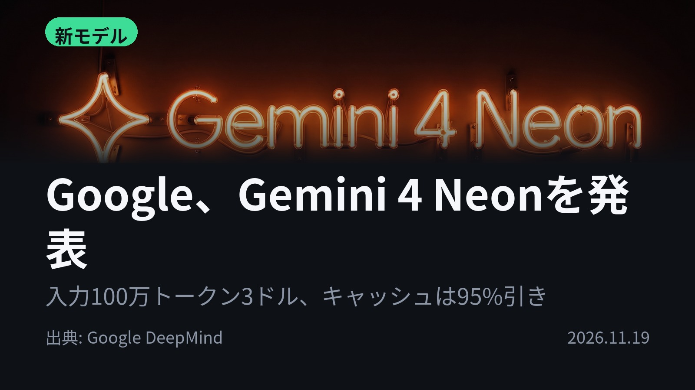
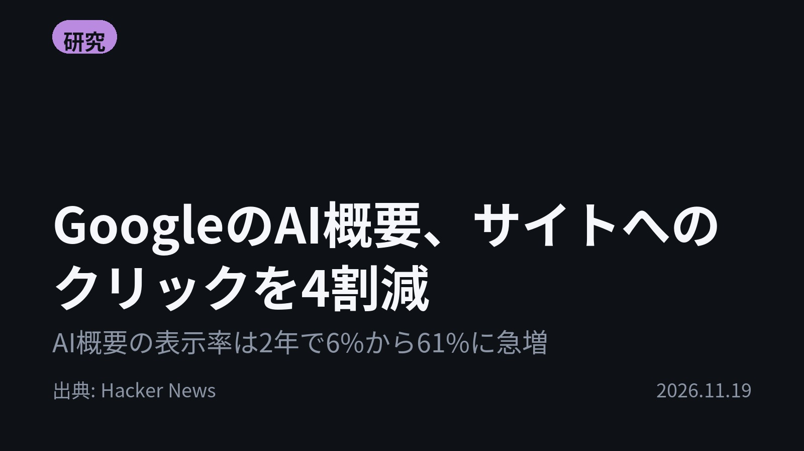
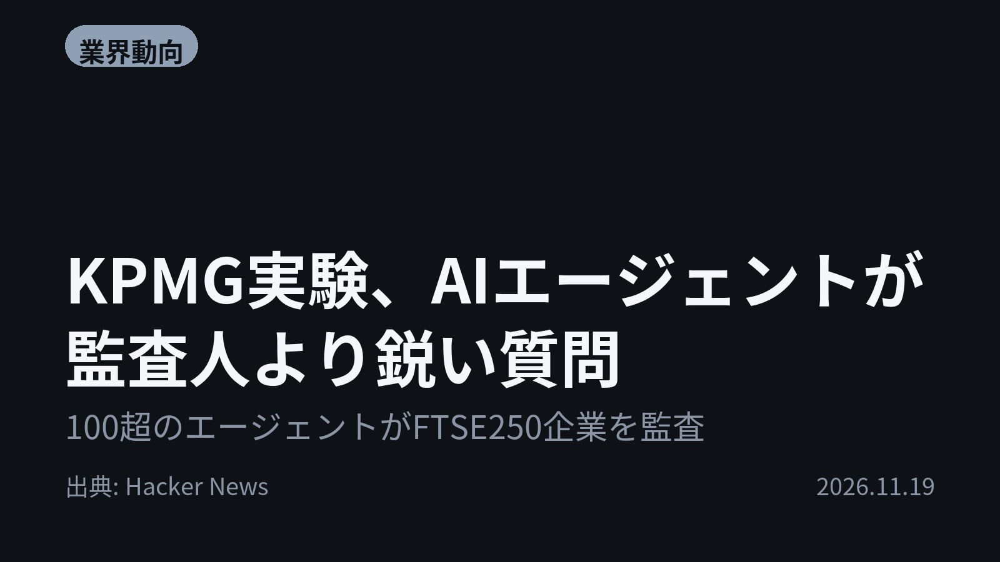
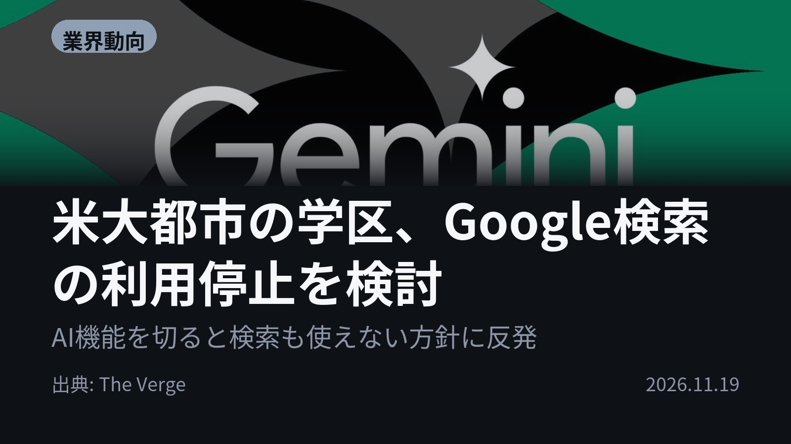
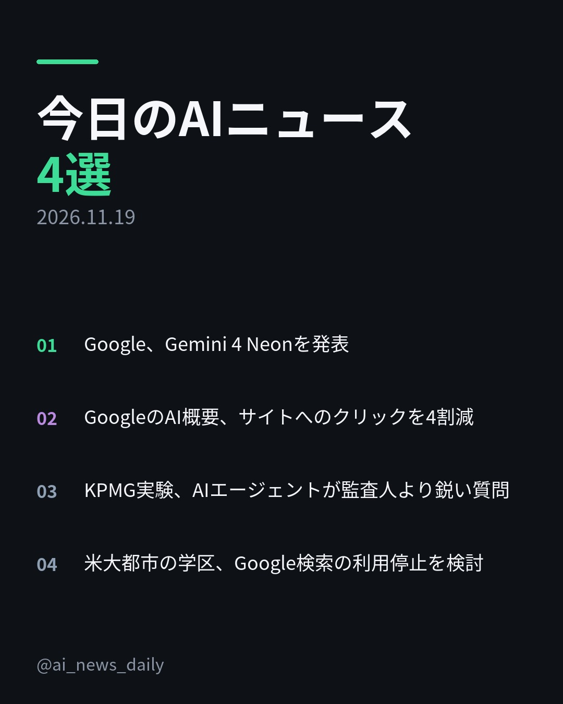
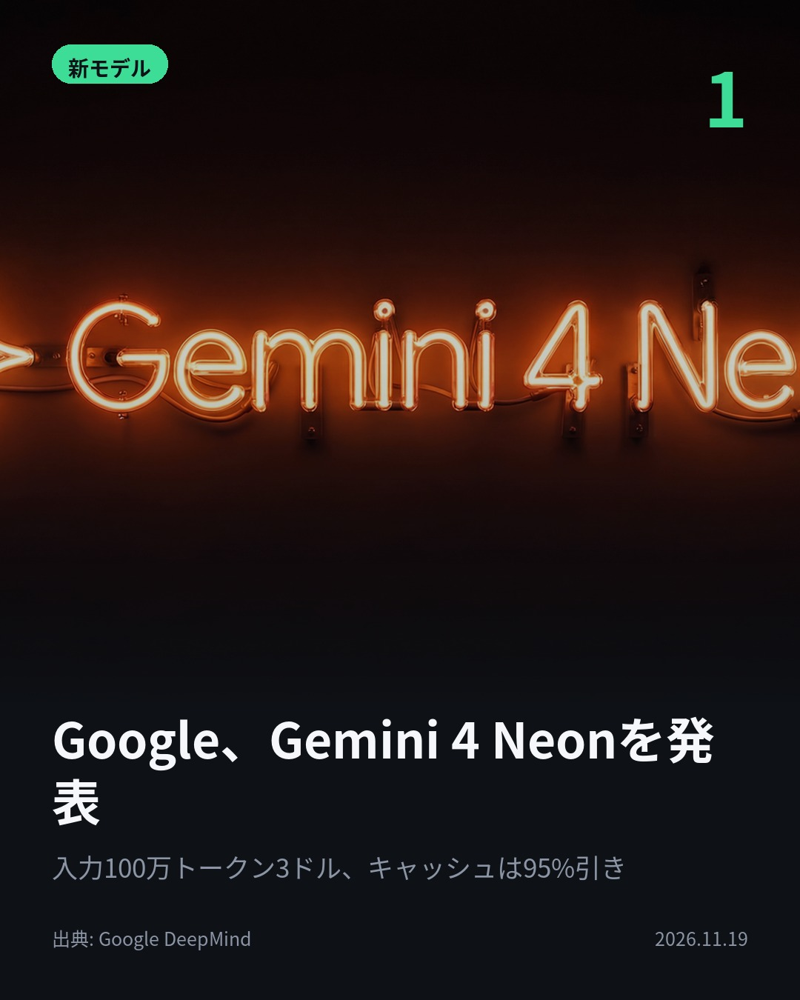
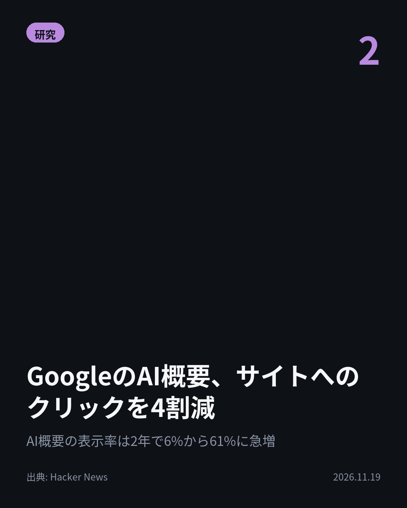
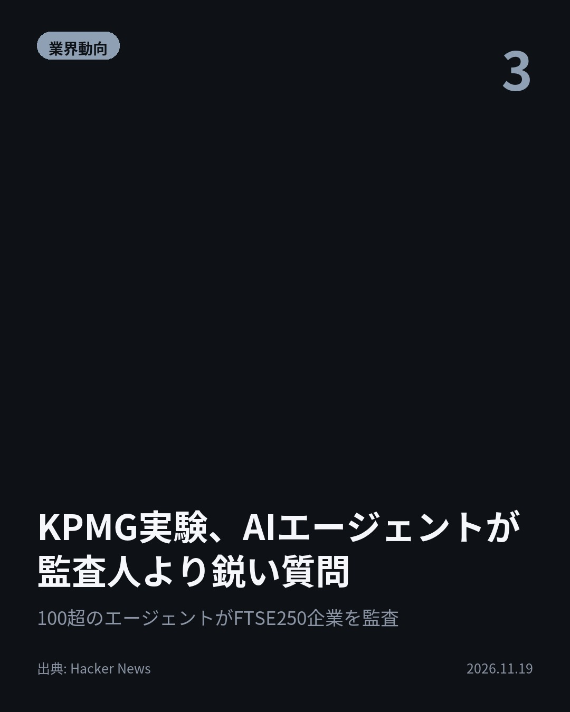
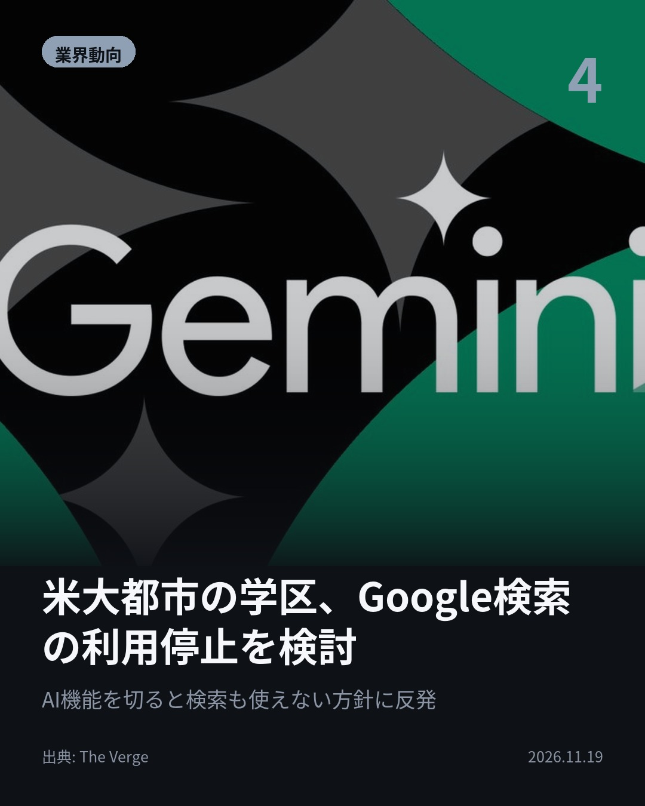

今日のAIニュース 下書き
2026-11-19 生成 11/19 19:03
⚠ ファクト照合で要確認の項目があります。
各ニュースの警告を確認してから投稿してください。
X（4投稿）
Google、Gemini 4 Neonを発表
原題: Introducing Gemini 4 Neon

入力100万トークン3ドル、キャッシュは95%引き。 Gemini 4 Neonは出力15ドル、文脈100万トークン。 SWE-sweepはAntigravity上で39.0%、mini-SWEの3倍超。 #AI #Gemini （出典: Google DeepMind）
重み 181 / 280（見た目 132字）
要確認:
［数値］100万 — この数値の根拠が本文に見つかりません
［固有名詞］トークン — この語が本文に見つかりません
［固有名詞］キャッシュ — この語が本文に見つかりません
［固有名詞］エージェント — この語が本文に見つかりません
［固有名詞］ベンチマーク — この語が本文に見つかりません
［固有名詞］DeepMind — この語が本文に見つかりません

GoogleのAI概要、サイトへのクリックを4割減
原題: Google's AI answers reducing search traffic by 40%

検索上位でも、AI概要の下では訪問が4割減る。 ランダム化実験で、AI概要を隠した群は1検索0.62クリック、見せた群は0.37。 AI概要の表示率は2年で6%から61.43%へ。 AIアシスタント経由の流入は0.3%。 #AI #SEO （出典: Hacker News）
重み 217 / 280（見た目 132字）
要確認:
［固有名詞］ランダム — この語が本文に見つかりません
［固有名詞］クリック — この語が本文に見つかりません
［固有名詞］アシスタント — この語が本文に見つかりません
［固有名詞］Hacker — この語が本文に見つかりません

KPMG実験、AIエージェントが監査人より鋭い質問
原題: AI agents ask better questions than KPMG accountants in audit trial

FTSE250企業の決算書を、100超のAIエージェントが調べた。 KPMG英国の実験で、人の監査チームより深く掘り、鋭い質問をしたことも。 規制要件の照合ミスで人が介入する場面もあった。 最大20件の監査に拡大予定。 #AI #KPMG （出典: Hacker News）
重み 229 / 280（見た目 132字）
要確認:
［固有名詞］エージェント — この語が本文に見つかりません
［固有名詞］Hacker — この語が本文に見つかりません
［固有名詞］News — この語が本文に見つかりません

米大都市の学区、Google検索の利用停止を検討
原題: The nation’s largest school districts consider ditching Google Search

学校がAIを切ると、検索まで使えなくなる？ Googleは来年から、Gemini機能だけを切る選択肢をなくす方針。 NY、LA、シカゴの学区が代替検索を検討。 NY市長やサンダース上院議員は「恐喝」と批判。 #AI #Google （出典: The Verge）
重み 215 / 280（見た目 126字）
要確認:
［固有名詞］サンダース — この語が本文に見つかりません

Instagram（カルーセル 6枚）


1. 表紙


2. ニュース


3. ニュース


4. ニュース


5. ニュース

6. CTA
AI概要が出る検索では、サイトへのクリックが約4割減る。 今日の4本のうち3本はGoogleがらみのニュースです。 1. Gemini 4 Neonは、Artificial Analysis Intelligence Index（AIの総合知能指標）で61点、総合3位。法務調査と税務エージェントのベンチマークでは1位でした。表計算・PDF・音声・動画を100万トークンの文脈にまとめて渡せます。Gemini APIや有料プラン向けのGeminiアプリで順次提供中です。(Google DeepMind) 2. 研究者はChrome拡張でユーザーを無作為に2群に分け、AI概要を隠した群と比べました。外部サイトを1つもクリックせずに終わる検索は54%から73%に増えています。分野別では、AI概要の表示率が健康69.68%、金融68.80%と特に高い結果でした。(Hacker News) 3. KPMG英国の「Project Exponential」は約4か月で開発されました。エージェント同士で役割を分け、情報収集から結論案の作成、次の手順の提案までを担当。ただし正式な法定監査の根拠には使われておらず、データの品質も課題に挙がっています。(Hacker News) 4. Googleは今月、すぐに答えを出さず段階を追って導く「Guided Learning」を授業向け検索で試験導入します。来年からは、学校が有効にするまでGeminiアプリ、Gemini Notebook、検索を初期状態でオフにすると説明しています。(The Verge) モデルの値下げ、検索流入の減少、監査の自動化、学校の反発。AIが既存の仕組みに入り込む場面が並んだ1日でした。 毎朝4本、AIニュースの要点をまとめています。フォローすれば、明日の4本もすぐ追えます。 #AI #生成AI #人工知能 #テクノロジー #AIニュース #ArtificialIntelligence #GenerativeAI #TechNews #Google #Gemini #Gemini4Neon #GoogleDeepMind #AIエージェント #AIAgents #SEO #GEO #AIOverviews #KPMG #監査 #教育 #EdTech #AI活用
977字（Instagram上限 2,200字）
この日の選定理由
Google、Gemini 4 Neonを発表
上位級の性能を中価格帯で出してきたため、エージェント開発や業務自動化でどのモデルを選ぶかの判断が変わりそうです。Antigravity上ではSWE-sweepのスコアが3倍超になり、モデル本体と同じくらい実行環境（ハーネス）が効くことも示しました。
GoogleのAI概要、サイトへのクリックを4割減
ランダム化実験で、AI概要がサイトへの流入を奪っていることが数字で裏付けられました。AIアシスタント経由の流入はわずか0.3%で、Webメディアや事業者の集客の前提が崩れつつあります。
KPMG実験、AIエージェントが監査人より鋭い質問
若手を大量に投入する監査の仕組みを、AIエージェントが置き換え始める兆しです。一方で、規制要件の照合ミスで人が介入しており、まだ監督が欠かせないことも分かりました。
米大都市の学区、Google検索の利用停止を検討
AIを既存サービスと抱き合わせで提供することに、教育現場が反発しています。巨大プラットフォームがAIの導入を事実上強いる構図と、利用者側の抵抗が見えます。